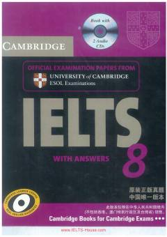

CIIELTS imtihoniga tayyorgarlik ko'rish uchun rasmiy amaliy testlar to'plami.
Ushbu rasmiy imtihon materiallari to'plami bo'lajak IELTS nomzodlariga imtihon formatini tushunish va o'z darajalarini baholash imkonini beradi. Kitob tinglash, o'qish, yozish va so'zlashish ko'nikmalarini sinovdan o'tkazuvchi to'rtta amaliy testni o'z ichiga oladi.